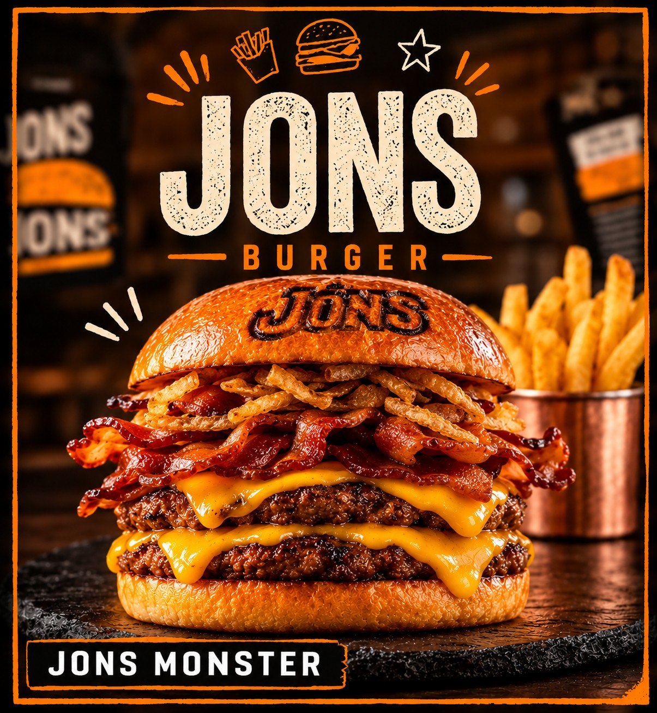

★ Hamburgueria artesanal · Est. 2026
O saborque faltavana cidade!
O CHEFE DA CASA
★ O protagonista
JONS
Monster
Cardápio oficial
Escolha, adicione ao pedido e pague por Pix.
Acompanhamentos & bebidas
Nossa história
A JONS Burger nasceu em uma aula de empreendedorismo, como ONS: o nome surgiu das iniciais de Otávio, Natã e Sarah.
Com o J de João Vitor, também integrante e fundador do projeto, a marca passou a se chamar JONS. Hoje, ela representa a união de quatro pessoas com vontade de empreender e transformar uma ideia em marca.
UniãoCriatividadeIniciativaVontade de empreender
João VitorFUNDADOR
OtávioFUNDADOR
NatãFUNDADOR
SarahFUNDADORA
Por que a JONS Burger?
01
Hambúrgueres artesanais
Feitos para quem gosta de sabor de verdade.
02
Combinações de sabores
Do clássico ao Monster, tem um para cada fome.
03
Maionese especial da casa
O toque que marca a identidade JONS.
04
Para todos os gostos e bolsos
Opções a partir de R$ 20,00.
05
Foco na sua satisfação
Atendimento pensado para o cliente voltar.
@jons.burger
O sabor que faltava na cidade!